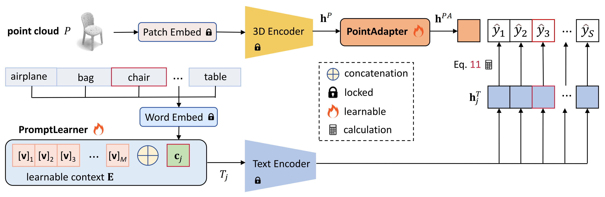

Parameter-efficient Prompt Learning for 3D Point Cloud Understanding
2024 IEEE International Conference on Robotics and Automation (ICRA2024)
Hongyu Sun, Yongcai Wang*, Wang Chen, Haoran Deng, Deying Li
School of Information, Renmin University of China, Beijing, 100872


Overview
This paper presents a parameter-efficient prompt tuning method, named PPT, to adapt a large multi-modal model for 3D point cloud understanding. Existing strategies are quite expensive in computation and storage, and depend on time-consuming prompt engineering. We address the problems from three aspects. Firstly, a PromptLearner module is devised to replace hand-crafted prompts with learnable contexts to automate the prompt tuning process. Then, we lock the pre-trained backbone instead of adopting the full fine-tuning paradigm to substantially improve the parameter efficiency. Finally, a lightweight PointAdapter module is arranged near target tasks to enhance prompt tuning for 3D point cloud understanding. Comprehensive experiments are conducted to demonstrate the superior parameter and data efficiency of the proposed method. Meanwhile, we obtain new records on 4 public datasets and multiple 3D tasks, i.e., point cloud recognition, few-shot learning, and part segmentation. The implementation is available at https://github.com/auniquesun/PPT.

Contributions
We identify two critical problems in ULIP: (1) performance fluctuation caused by prompt engineering. (2) expensive storage and poor parameter efficiency caused by fully fine-tuning the pre-trained 3D encoder.
We devise PromptLearner and PointAdapter to liberate prompt engineering, promote parameter and data efficiency, and enhance the effectiveness of point cloud understanding.
The proposed method shows stunning performances across different tasks and datasets for 3D point cloud understanding, supported by systematic experiments and ablation studies.
Evaluations


Ablation Studies
Data Efficiency. Adapting a large model to downstream tasks could potentially decrease the demand for labeled data. We investigate the data efficiency of the devised prompt tuning strategy and compare it with the full fine-tuning paradigm adopted by ULIP. The experiment is conducted on ModelNet40, using different portions (5%, 10%, 15%, 20%, etc.) of data for training and evaluating on the whole test set. Fig. 4a exhibits the results. Here PPT-Base indicates our model only introduces the PromptLearner module, without PointAdapter. We observe under low-data regime, especially when using less than 20% of training data, our three PPT variants lead ULIP (PointBERT) by significant margins. Even training with 5% data and less than 1.8M learnable parameters, PPT-Base, PPT-FFN, and PPT-PTB reach 90.7%, 93.2% and 93.1% test accuracy, respectively, versus 39.1M parameters and 77.5% accuracy of ULIP. The results indicate the developed parameter-efficient prompt tuning strategy is also data-efficient.
Context Length. One variable that should be decided is the length M of the learnable contexts. Intuitively, longer contexts contain more parameters thus may provide the model with more informative descriptions for downstream tasks. We explore this problem by varying the length and comparing the recognition accuracy. The resultsare averaged over 4 datasets, referring to the dashed line in Fig. 4b. The overall trend is the longer the context, the better the performance. But it is not always positive to increase length, i.e., PPT-Base of M = 64 lags behind that of M = 32 in average. Thus we adopt M = 32 by default.
BibTex
xxxxxxxxxx61@inproceedings{sun24ppt,2 title={Parameter-efficient Prompt Learning for 3D Point Cloud Understanding},3 author={Hongyu Sun, Yongcai Wang, Wang Chen, Haoran Deng and Deying Li},4 booktitle={IEEE International Conference on Robotics and Automation (ICRA)},5 year={2024}6}Acknowledgment
This work was supported in part by the National Natural Science Foundation of China under Grants No. 61972404 and No. 12071478, and Public Computing Cloud, Renmin University of China, and the Blockchain Lab, School of Information, Renmin University of China.